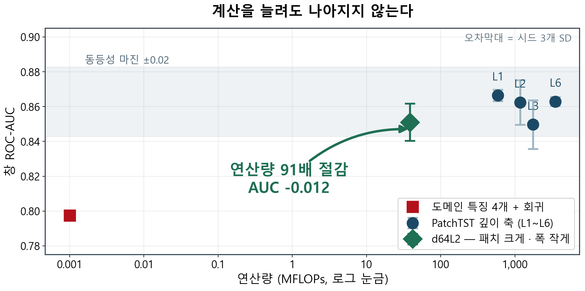
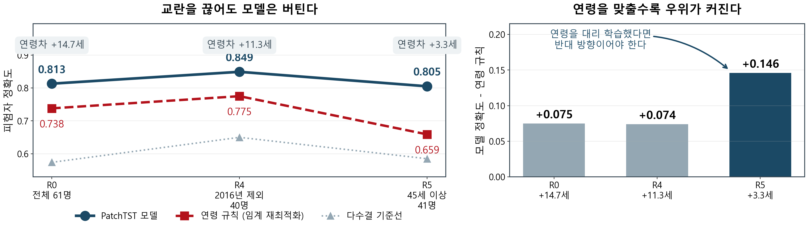
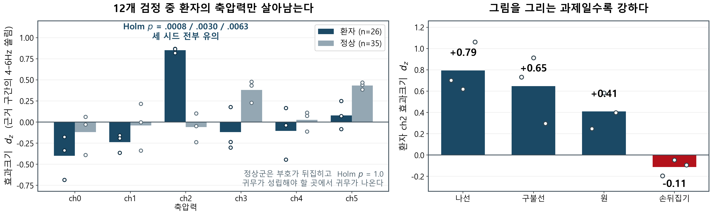

근거 2
계산을 늘려도 나아지지 않는다

층을 6배 쌓아도 AUC는 개선되지 않는다(L1 .8664 → L6 .8629). 유효한 축은 깊이가 아니라 패치 길이와 폭이다.
NEWHANDPD 스마트펜 6채널 · 1000Hz · 고유 인물 61명 (정상 35 / 환자 26)
계산을 입력별로 배분하지 말고, 표현을 바꿔라
d64L23,499 MFLOPs 참조 모델과 38 MFLOPs 모델의 창 AUC 차이는 0.012 — 동등성 마진 0.02 안이다. 다만 이 데이터셋은 나이 하나로 자르는 규칙만으로 73.8%가 맞는다. 성능을 주장하기 전에 그 성능이 무엇인지부터 물어야 한다.

연령을 대리 학습했다면 반대 방향이 나와야 한다. 배포 모델
d64L2에서도 재현된다(우위 +.081 → +.178, 연령 매칭 시 정확도가
오히려 상승). 기록의 첫 창·마지막 창을 지워도 창 AUC .8664 → .8691로 유지된다.

층을 6배 쌓아도 AUC는 개선되지 않는다(L1 .8664 → L6 .8629). 유효한 축은 깊이가 아니라 패치 길이와 폭이다.

모델이 짚는 구간과 나머지 구간의 4–6Hz 떨림 대역 상대 파워를 피험자 안에서 비교했다. 12개 검정에서 환자의 축압력 하나만 세 시드 전부 생존(26명 중 22명 동일 방향). 과제 순서는 독립적으로 얻은 과제별 분류 성능(원 그리기 AUC .408)과 방향이 일치한다.
| 연구 | 분할 단위 | 보고 성능 |
|---|---|---|
| 이미지 5-fold 계열 (2025) | 클래스별 샘플 5-fold, 그룹 키 미확인 | 96.97 ± 1.27% |
| 1D-CNN + BiGRU (2020) | 65/10/25, 그룹 키 미확인 | 94.44% |
| Albani · Sonbol (2026) | 이미지 단위 5-fold와 LOIO 직접 비교 | 97.08 · 94.91% |
| Zhang (2025) — 재현 연구 | 원 논문 프로토콜 재현 | 84.03 ± 2.67% |
| Zhu (2025) | NewHandPD를 외부 평가로만 사용 | 76.89% |
| 본 연구 | 인물 단위 GroupKFold + 연령 매칭 | 창 AUC .851–.866 |
그룹 키 미확인 연구는 96~99%대, 재현 · 외부 평가 · 사람 단위 명시 연구는 76~84%대에 모인다. 미확인은 미수행 판정이 아니다 — 논문에 기술되지 않아 확인하지 못했다는 뜻이다.
38 MFLOPs 모델이 노트북 CPU 코어 하나에서 2초 신호를 7.8ms에 처리한다. 별도 가속기 없이 온디바이스 선별이 가능한 수준이다.
그 절감은 입력별 배분이 아니라 표현을 바꿔서 얻었다. 다만 FLOPs 91배 차이가 실측에서는 49배로 줄어, 이론 연산량만으로 배포 비용을 주장할 수 없음도 함께 보인다.
말할 수 없는 것 — 서브셋 실험은 fold 3개라 ±0.15 규모 변화를 검출하지 못한다. occlusion은 상관이며 인과가 아니다(같은 대역을 지우고 재학습하면 성능이 회복된다). 개별 항목의 최초성은 주장하지 않는다.